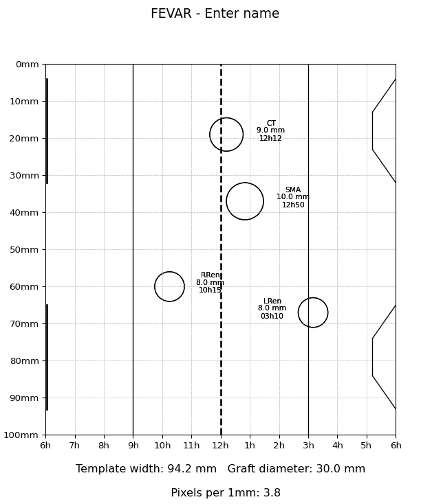
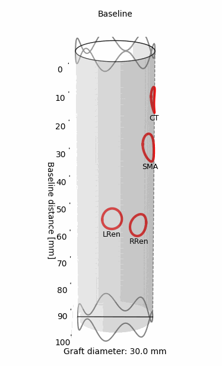
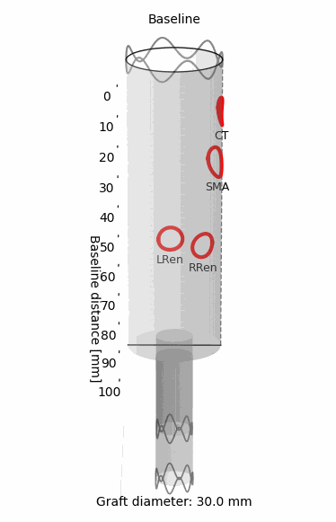
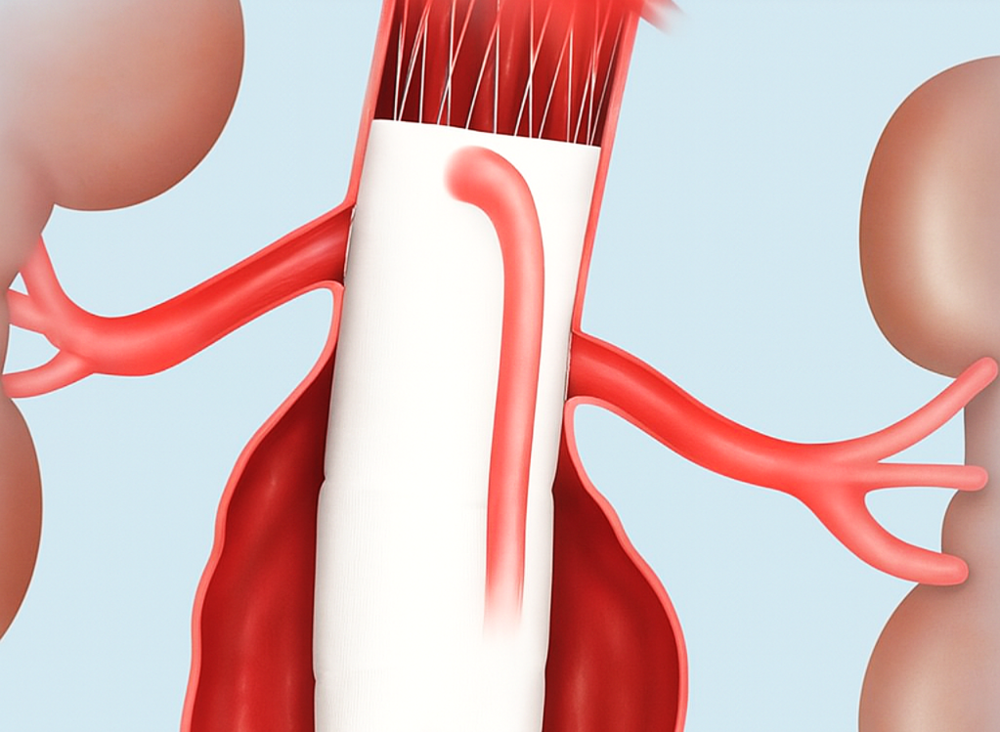
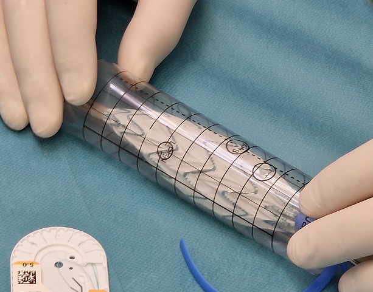
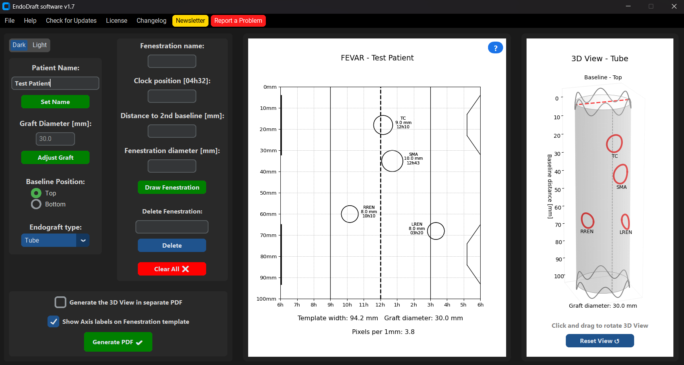

EndoDraft® – Surgical Planning Software for Aneurysm Fenestration Templates
🛠️ EndoDraft is a lightweight, standalone surgical planning software designed to assist interventional radiologists and vascular surgeons in planning physician-modified endografts (PMEGs).
It enables precise design of fenestration locations, visual feedback in 2D/3D, and exports print-ready plans for intraoperative use.
➡️ Download
🎥 Demo



Sample 2D and rotating 3D preview of a fenestrated stent graft designed with EndoDraft.


Sample graphics and photo about deploying a laser printed punch card made in EndoDraft.

Screenshot while using the software.
🚀 Features
- 🧭 Computed Tomography (CT) based fenestration design
- 📏 Baseline distance and clock position input with dual referencing
- 🎯 Multiple fenestration types and diameters
- 🖼 2D and 3D visual preview (interactive)
- 📄 PDF export with surgical planning data
- 🧠 Ideal for FEVAR / PMEG preoperative workflows
📦 Download
➡️ Download the latest version from the Releases tab
⚠️ Windows SmartScreen & Antivirus Notice
Since the software does not yet have a digital signature (it costs a lot!), some operating systems (especially Windows) may display a
warning when launching the .exe file, such as:
“Windows protected your PC” or “Unknown publisher”.
This is standard behavior for unsigned applications and does not mean the file is dangerous.
EndoDraft has been thoroughly tested and is
totally safe to use, so you can ignore the warning.
✅ If this happens, to proceed on Windows:
- Click “More info”
- Then select “Run anyway”
No installation required. The program runs as a standalone
.exe.
🖥 System Requirements
- Windows 10 or newer (64-bit)
- No installation necessary
- No internet connection required (only for software updates)
- The software is currently optimized for Windows, macOS or Linux users can have issues. Development is in progress.
📧 Feedback or Contact
If you have questions, feature requests, or feedback, feel free to contact me through the software!
➡️ Download
or open an issue (GitHub account required)
📜 License
EndoDraft® - Software License Agreement
© 2025 Bendegúz Juhos
- This software (EndoDraft®) is provided free of charge for academic and personal use only.
- Redistribution, modification, or commercial use of the software is strictly prohibited without prior written permission from the author.
- The software is distributed as a compiled executable (.exe) file only. No source code is provided.
- The software is provided "as is", without warranty of any kind, express or implied.
By using this software, you agree to the terms above.
© 2025 Bendegúz Juhos - Semmelweis Aortic Center, Department of Interventional Radiology, Heart and Vascular Centre, Semmelweis University, Budapest, Hungary